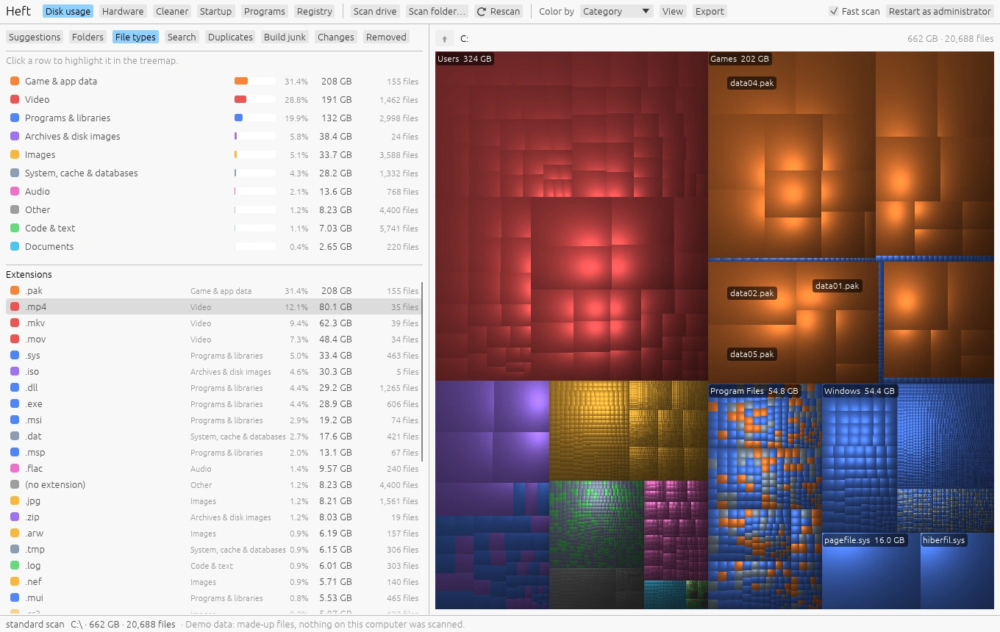
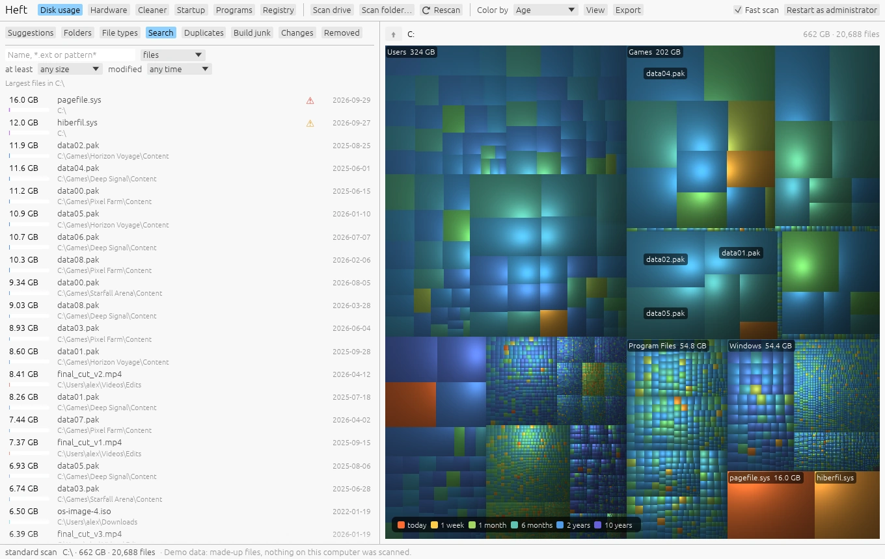

Finding what uses space
Windows · macOS · LinuxThe Disk usage page shows every file on a drive, so you can see at a glance where the space went.
Scanning
Pick a drive or your home folder on the start screen, choose any folder with Scan a folder, or drop a folder onto the window. Later, use Scan drive, Scan folder and Rescan in the toolbar.
Heft has two ways to scan:
- Fast scan (Windows, NTFS, administrator). Heft reads the drive's master file table directly instead of opening every folder. A 1.5 TB drive with 2.7 million files takes about 6 seconds. Leave Fast scan ticked in the toolbar and use Restart as administrator to get it.
- Folder scan (everywhere else). Heft lists folders on many threads at once. It works without special rights on every system, just more slowly.
After a fast scan, Rescan doesn't start from scratch: it reads the NTFS change journal and updates only what changed. Tick View > Update automatically and Heft keeps the map current every few seconds while it's open.
The treemap

Every file is a rectangle sized by the space it uses. Files in the same folder sit together, and the shading makes each folder look like a raised cushion, so you can tell folders apart without borders.
| To | Do this |
|---|---|
| Select a file or folder | Click it. The folder tree scrolls to it. |
| See its path and size | Hover over it. |
| Zoom into a folder | Double-click, or press Enter. |
| Zoom out | Backspace, the mouse back button, or the up arrow button above the map. |
| Move between rectangles | Arrow keys, with the treemap focused. |
| Clear a highlight | Esc. |
Color by in the toolbar changes what the colors mean:
- File type: one color per extension.
- Category: video, images, audio, archives, documents, code, programs, game data and system files.
- Age: when each file last changed, from today (warm) to ten years ago (cool). Good for finding forgotten folders.
- Growth: what grew since an earlier scan. It becomes available after you compare scans on the Changes tab.
The View menu has two more options. Size rectangles by switches between file size and space on disk; compressed, sparse and online-only files take less room than their size suggests. Show names on large rectangles turns the labels on or off.
Right-click anything, in the map or the tree, for Zoom into folder, Show in Explorer (Finder on a Mac), Open, Copy path, Highlight all files of that type, Compress, Move to another drive and Move to Recycle Bin.
Folders
The Folders tab is the classic view: a tree with each folder's size, its share of the folder above it, how many files it holds and when anything inside last changed. Biggest folders come first.
A warning triangle next to a folder means deleting it could cause trouble. Hover over the triangle for the reason, or read what the warnings mean.
Keyboard: Up and Down move through the tree, Right and Left expand and collapse.
File types


The File types tab adds up space by category (games, video, programs and so on) and by extension. Click a row to highlight every matching file in the treemap; press Esc to clear it.
Search


The Search tab searches the whole scan instantly, without touching the disk again. With no search text it lists the largest files.
- Text: part of a name (
invoice), an extension (.isoor*.iso), or a pattern with*and?(IMG_????.jpg,backup*). Case doesn't matter. - Files, folders, or both.
- At least 1 MB, 10 MB, 100 MB, 1 GB or 10 GB.
- Modified in the last week, month or year, or over 6 months, a year or 2 years ago.
Search looks inside the folder shown in the treemap, so zoom in first to search one part of the drive. Everything that matches can go to the Recycle Bin or Trash in one step, with the usual confirmation.
Changes over time
Heft saves a small snapshot after each scan: every folder, plus files over 16 MB. Scan the same drive again a few days or weeks later and the Changes tab can compare the two.
- Open the Changes tab.
- Pick an earlier scan under Compare with and press Compare.
- Heft lists the folders that grew or shrank the most. Choose Color by > Growth to see the same thing on the map.
The Size over time chart shows how the folder shown in the treemap changed across every saved scan. Zoom into a folder to chart just that folder.
Export
The Export menu saves the folder shown in the treemap as:
- Every file and folder (CSV), one row per item, for a spreadsheet;
- Folders only (CSV), which is much shorter;
- Summary (JSON), with totals, the drive's free space, what's directly inside the folder, the largest files and space by type.
To export from a script instead, see Command line.
How sizes are counted
Heft goes out of its way to count space correctly, so its totals can differ from other tools:
- Hard links are counted once. Windows keeps many system files under two names. A plain folder scan counts them twice; on one test drive that added 24 GB that didn't exist.
- Online-only files count as 0 bytes on disk. OneDrive, Dropbox and iCloud files that aren't downloaded take no space, and Heft never reads them, so scanning doesn't download anything.
- Folders reachable by two paths are counted once (bind mounts, macOS firmlinks), and virtual file systems such as
/procare skipped. - The fast scan sees hidden system areas such as
System Volume Information, where Windows keeps restore points, which a folder scan can't open.